Um espaço de acesso à leitura e à cultura para toda a comunidade.
Conheça nossa história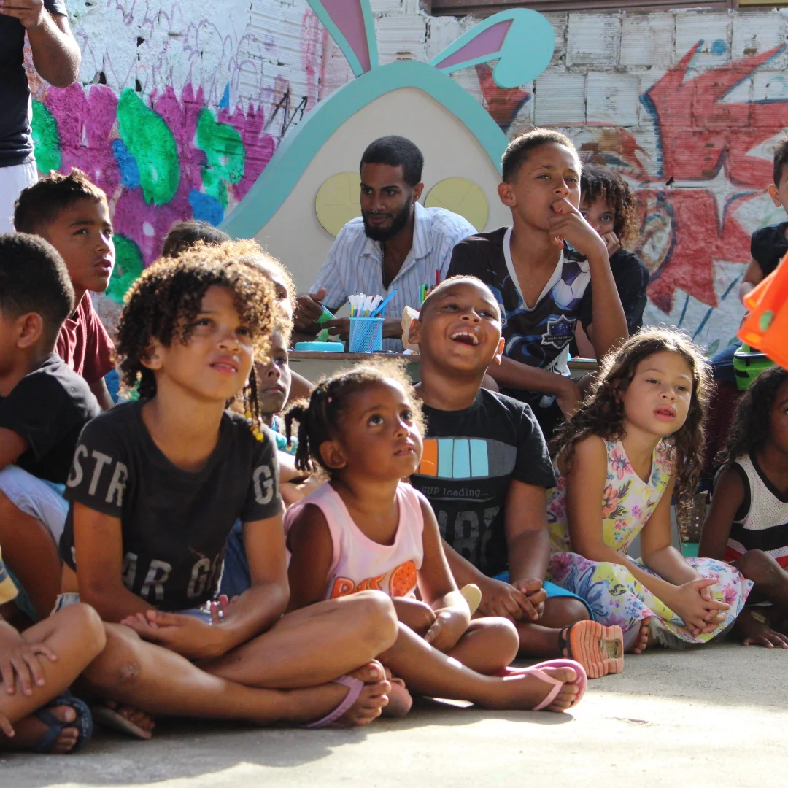
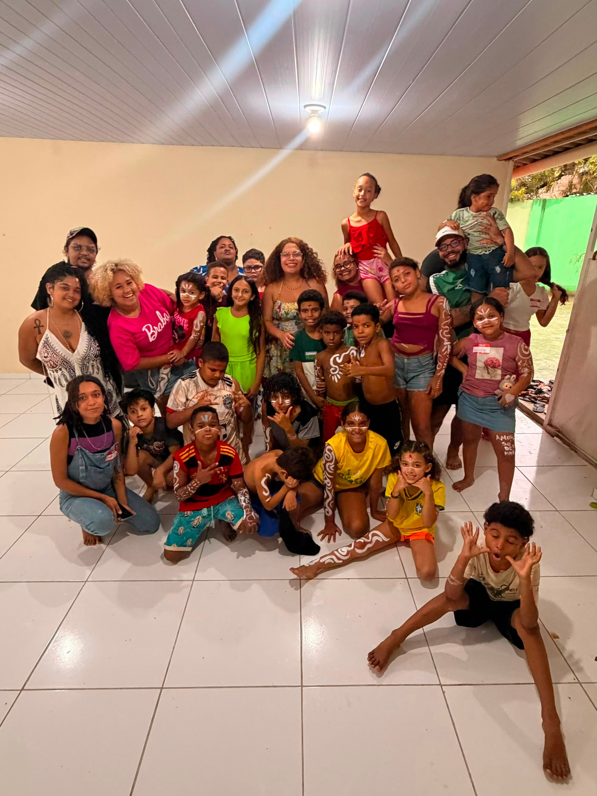
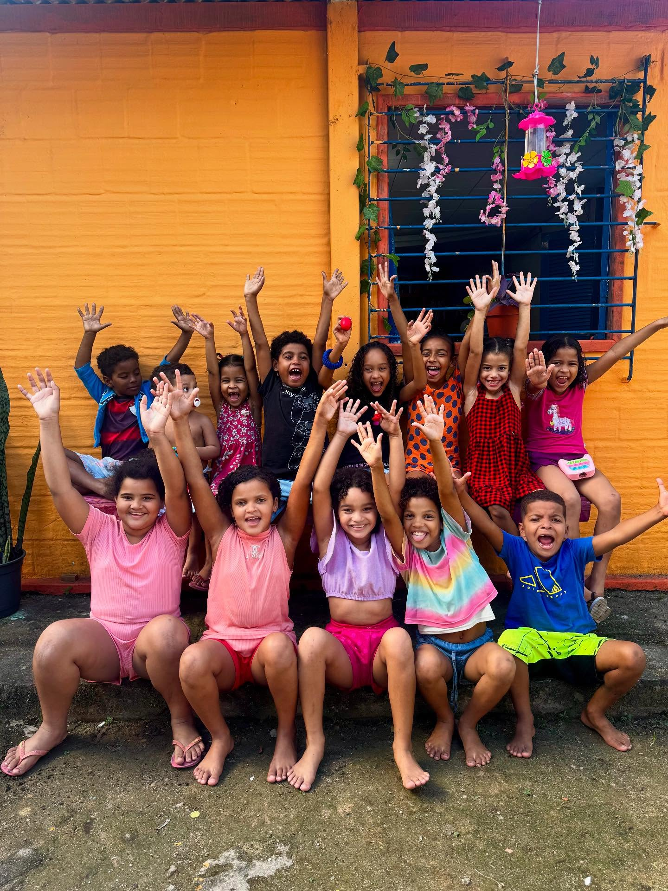
Inspirados pela Livroteca do Pina e movidos pela ideia de que tudo o que é aprendido com afeto pode ser mais significativo e prazeroso, a Afetoteca nasceu com o propósito de aproximar a comunidade da educação, da arte e da cultura, tendo as crianças como uma das principais formas de conexão com esse propósito. Com o tempo, o projeto cresceu e passou a ser muito mais do que uma biblioteca comunitária. Hoje, a Afetoteca também é um espaço de convivência, aprendizado e acolhimento.
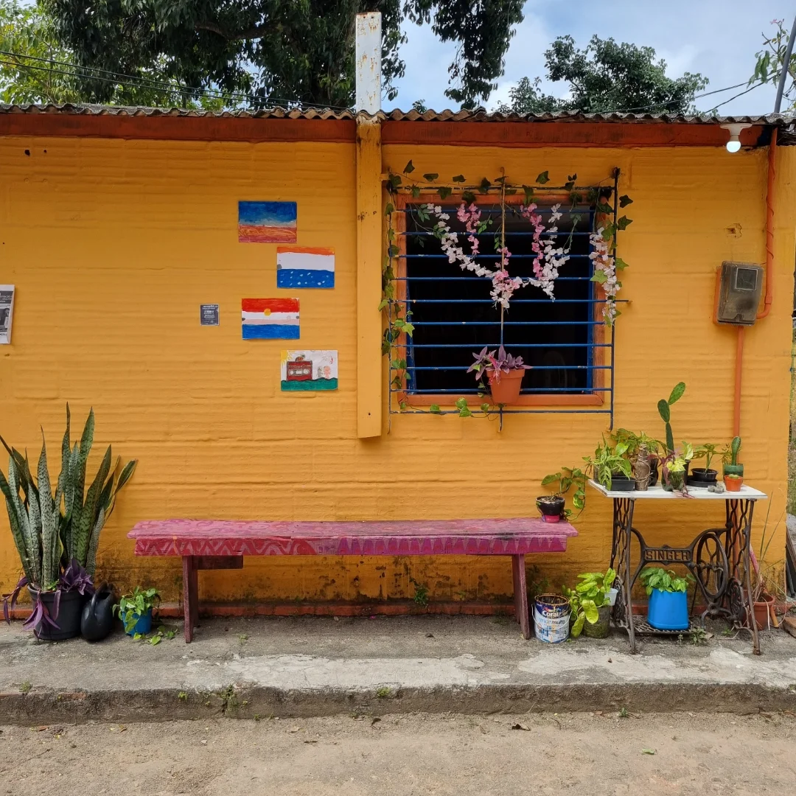
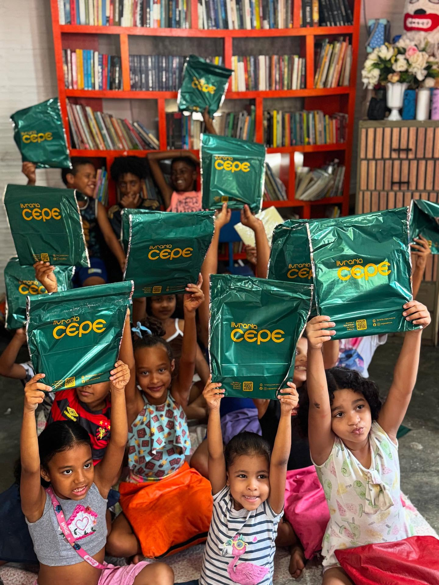
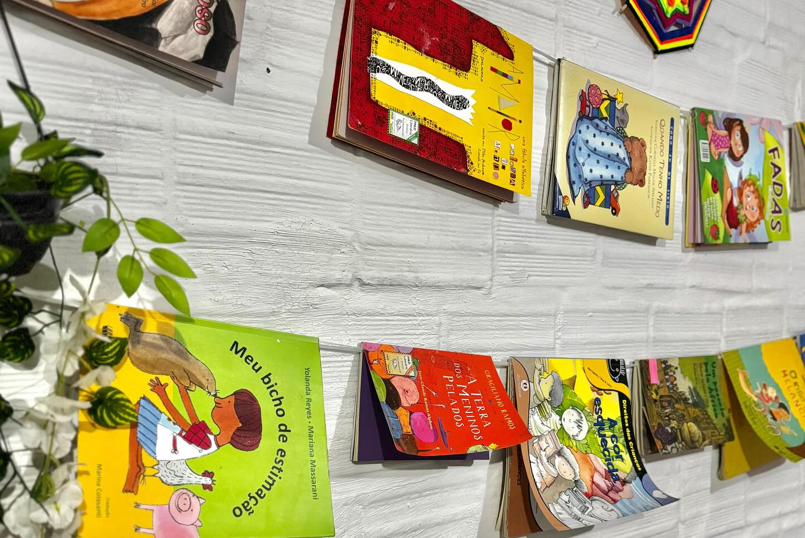
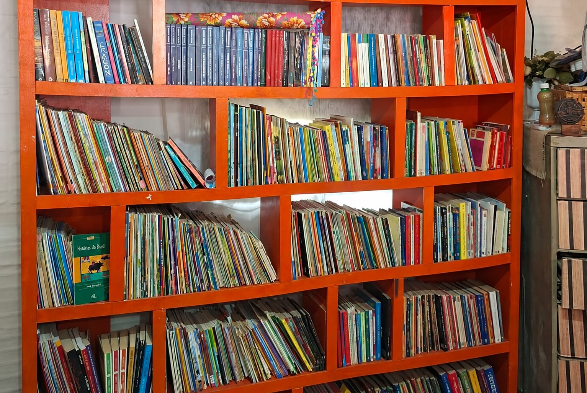
Empréstimo gratuito de livros pra toda a comunidade.
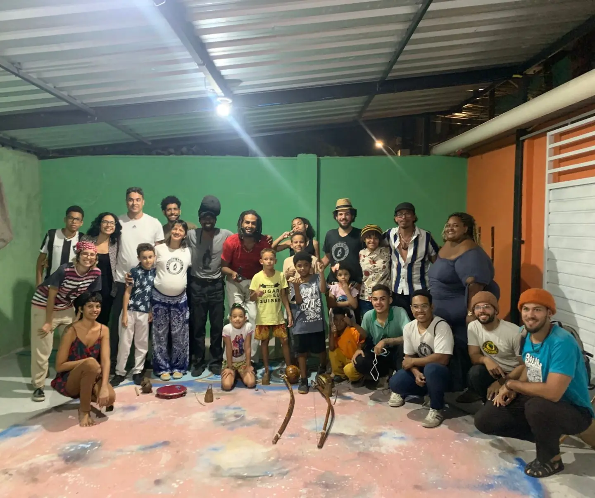
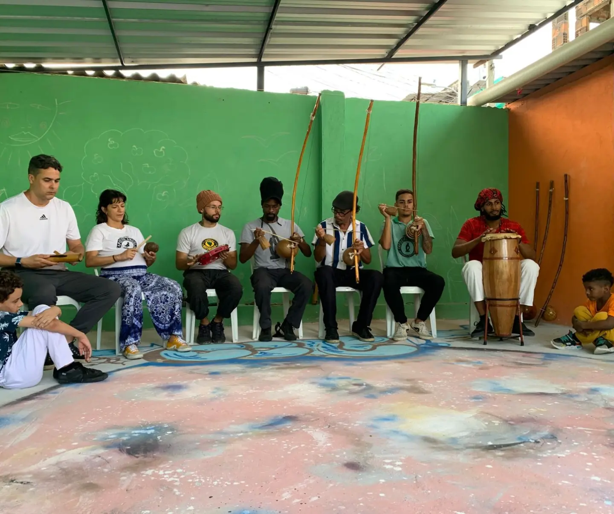
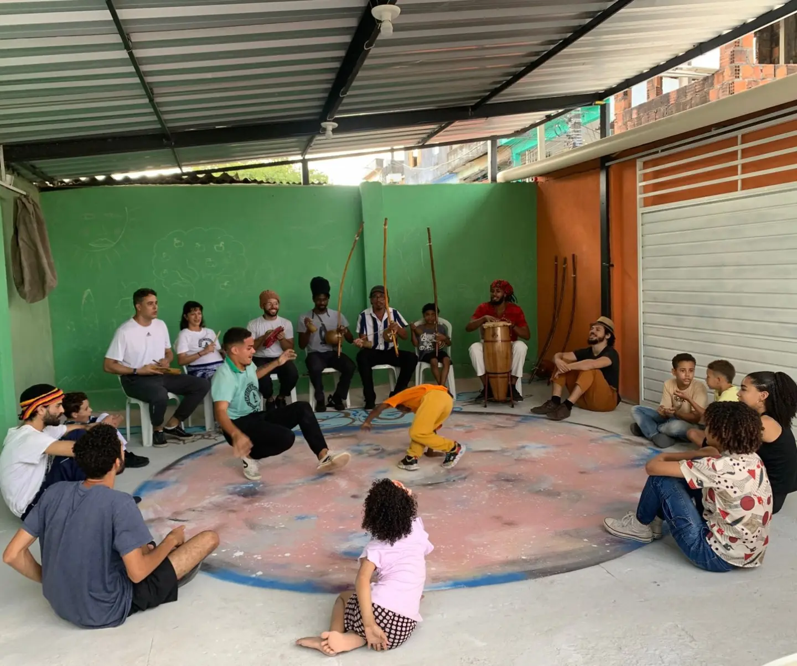
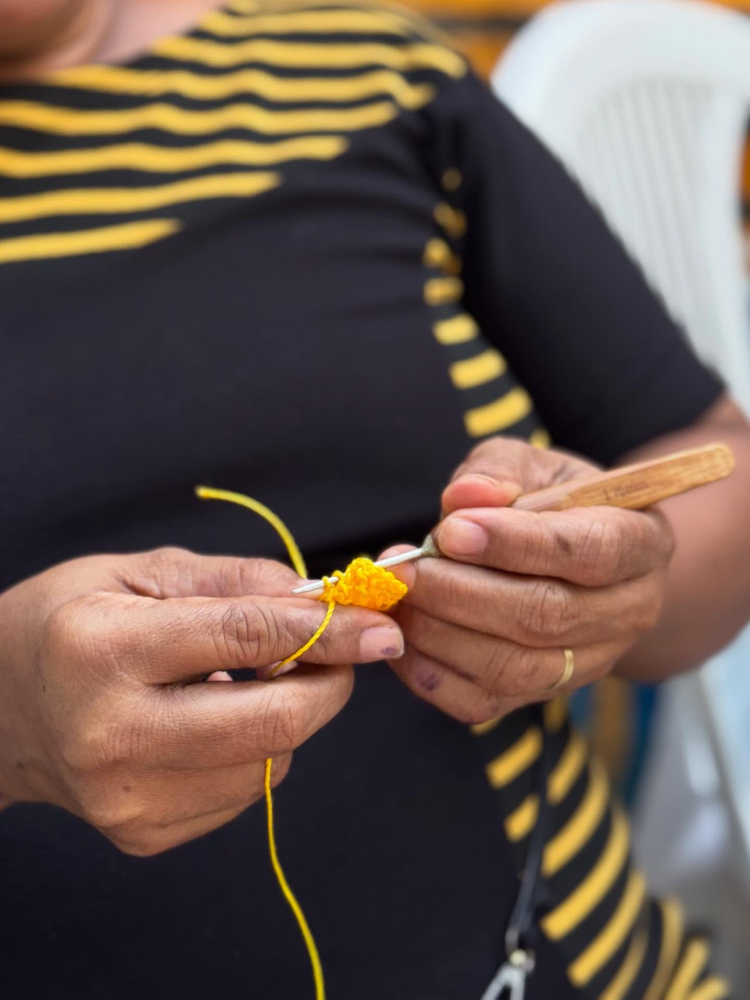
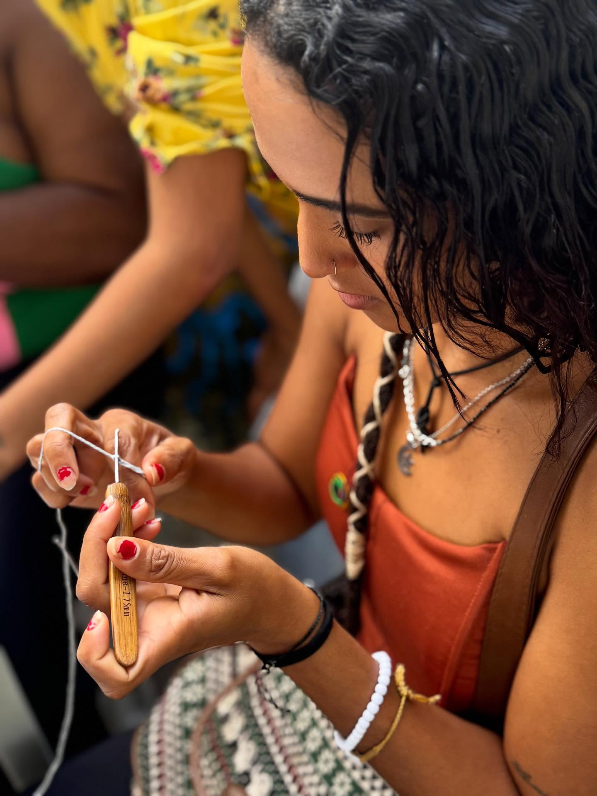
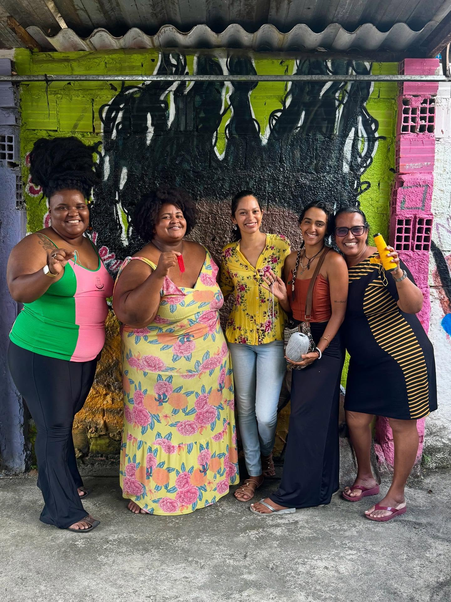
Um lugar de encontros, aprendizados e novas experiências.
Como Chegar